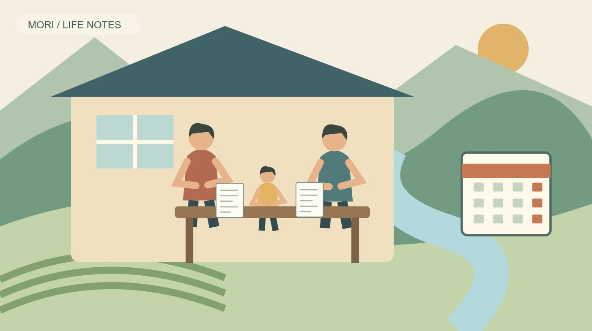
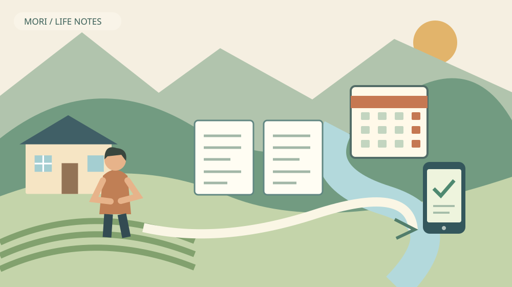

森町の育児免除｜自営業の親も年金負担を軽く

Q. 自営業で子育て中でも、年金保険料を軽くできますか？
A. 国民年金第1号被保険者が1歳未満の子を養育する場合、2026年10月開始の育児免除を確認できます。所得要件はなく、免除期間も納付済みとして老齢基礎年金額に反映されます。夫婦それぞれの加入区分と対象月を確かめ、届出の要否を確認してください。
家計を支える仕事と子育てを、別々に数えない
森町で店を開け、畑に出て、乳児の世話をする。仕事と子育ての両方を続ける家族の負担は、収入の額だけでは測れません。休む人の代わりを探す時間も、手続きのために外出する時間も要ります。地域の商売を支えるご家族が、すでに払っている手間を出発点に考えたいと思います。
大石浩之（磐田市／不動産業）です。私は森町の外で暮らし、不動産の仕事を通じて地域を見ています。家を選ぶ際には購入額だけでなく、入居後の毎月の支出も見ます。今回は住まいの契約を急ぐ話ではなく、子育て期の家計で見落としたくない国民年金の育児免除を整理します。
2026年11月1日は日曜日です。役場へ出向けない日でも、夫婦がどの年金に入っているかは確認できます。子の生年月日と、日本年金機構から届いた通知を並べる。その準備だけでも、平日に尋ねる内容を絞れます。この記事の制度情報は2026年11月1日に原文を確認しています。
国民年金保険料の育児免除制度は、森町独自の給付ではありません。国の制度を森町の家族がどう確認するかが本稿の範囲です。町の補助金のように振込を待つ仕組みとも異なります。まず保険料の納付と免除の話であることを、ご家族の間でそろえておくと行き違いを防げます。
育児免除の対象は、仕事の呼び名より加入区分
日本年金機構の案内では、国民年金第1号被保険者が1歳になるまでの子を養育する場合に、育児免除の対象となります。対象となる親には実父母や養父母が含まれます。親子関係があること、子と同一住所であることなどの要件を確認します。所得の多寡で対象を選ぶ制度ではありません。
自営業者や農業者でも、実際の加入区分は人によって違います。配偶者の扶養に入っている場合や、別の仕事で厚生年金に加入している場合もあります。「家で仕事をしているから第1号」と推測せず、ねんきん定期便や加入記録などで本人の区分を確かめる必要があります。
第2号被保険者には、厚生年金の育児休業等に関する別の仕組みがあります。第3号被保険者と任意加入被保険者は、今回の育児免除の対象ではありません。夫婦で同じ家に住んでいても、確認する制度が同じとは限りません。片方の結果をそのままもう片方に当てはめないでください。
意外に感じるのは、父親も対象になり得ることです。夫婦とも第1号被保険者で、それぞれ要件を満たすなら双方が対象になります。子育ての書類を母親一人に集めると、父親の手続きを見落としかねません。通知の名前と加入区分を、一人ずつ分けて確認する方が確実です。
森町公式の「国民年金」ページには、加入区分や国保年金係の連絡先が載っています。ただし、そのページの更新日は2025年7月17日です。新しい育児免除の詳細は、2026年10月1日更新の日本年金機構の案内で確かめます。古い総合案内に記載がないことと、制度が使えないことは別です。
対象月は、出生日と免除の種類を並べて確認
育児免除の対象月は、実母か実父・養父母か、産前産後免除があるかで整理が変わります。産前産後免除期間を有する実母は、その期間に続く9か月間が基本です。実父などは養育を始めた月から、子が1歳になる誕生日の前月までの最大12か月間が示されています。
いずれも2026年10月1日以降の期間が対象です。2026年10月より前に子が生まれていても、開始時点で1歳未満なら対象期間が残る場合があります。「新制度より前に生まれたから関係ない」と切り捨てないでください。出生日と制度開始月を同じ暦の上に置いて確認します。
対象期間を自分で計算する際、月の数だけを先に数えると誤りやすくなります。産前産後免除の通知にある終了月、子の誕生日、加入区分の変更月を順に書き出します。日付や養育状況に個別の事情がある場合は、計算結果を確定額として家計表へ入れる前に窓口で確認してください。
家計の見通しは「対象と確認できた月」と「まだ照会していない月」を分けると扱いやすくなります。住宅費や保育に使うお金を考えるとき、未確認の免除まで決まった節約額として数えないためです。私は、使える制度を探すことと、支出を先に減らす判断を分けたいと考えます。
良い点｜保険料の負担を軽くし、将来の年金にもつなぐ
育児免除の良い点は、対象期間の保険料を免除しながら、納付済みとして老齢基礎年金額へ反映することです。日本年金機構は、所得に関係なく届出できる仕組みと案内しています。単に支払いを後回しにする制度とは違い、子育て期間の支出と将来の年金を両方考えられます。
私は、子育て期の家計では支出が一つ確定するだけでも意味があると考えます。毎月の売上が揺れる商売では、入ってくるお金を必ずしも増やせません。対象となる固定的な負担を確認しておけば、仕入れや住居費と分けて、家庭に残すお金を考える材料になります。
すでに保険料を納めた対象期間も、育児免除の取扱いを確認できます。日本年金機構は、該当する保険料を充当または還付すると案内しています。支払ったから手遅れ、と決める必要はありません。ただし返金の時期や方法を自分で決めつけず、届出後の案内を確かめる必要があります。
私が良いと感じるのは、先にまじめに払った家族にも確認の道があることです。通知書と納付記録を残しておけば、照会のたびに記憶をたどらずに済みます。還付があると見込んで買い物を増やすより、処理結果を受け取ってから家計表を直す。その順なら、期待と実際のずれを抑えられます。
一般の免除や納付猶予が承認されている期間についても、育児免除の対象なら取扱いを確認できます。一般の仕組みとの違いは、国民年金の免除と猶予の記事で整理しています。すでに何かの免除を受けているから確認不要、と考えないことが今回の要点です。
注文したい点｜「自動」と「届出」を家族単位で混ぜない
育児免除には、一定の条件を満たす実母について届出が不要となる場合があります。産前産後免除期間が2026年9月以降に終了し、引き続く養育を日本年金機構が確認できる方などが該当します。対象者には育児免除該当通知書が送られるため、届いた書類の名前を確かめてください。
実父・養父母や、産前産後免除の届出が済んでいない実母は手続きが必要です。母親に通知が来たことだけで、父親の手続きまで終わるわけではありません。この違いは、二人とも自営業という家庭ほど見落としたくない部分です。自動処理の対象かどうかを、夫婦別に確認します。
私は、案内を読む人の負担にも目を向けたいと思います。乳児のいる家庭では、説明を最初から最後まで続けて読めるとは限りません。「通知が来る人」「届出する人」「まだ区別できない人」の順に分かる案内があれば、家族が途中から読んでも自分の位置を把握しやすくなります。
ただ、私は自動化だけで全員の確認が不要になるとも思いません。住所や加入区分が変わる家庭もあるからです。どこまでを機関側で確認でき、どこから家族の申告が必要か。その線引きを見失わないことが、手間を減らす条件になります。迷ったときは未確認のまま担当窓口へ尋ねる方が確実です。
通知が来ない場合に、いつまで待つのが適切かは個別の状況を見ないと分かりません。私はそこを一律の日数で案内できません。産前産後免除の終了通知なのか、育児免除の該当通知なのかを区別し、届出の要否を問い合わせる。この小さな確認が、何もせず待ち続ける状態を防ぎます。
届出方法は、窓口・郵送・電子申請から確かめる
育児免除は紙の届出と電子申請に対応しています。日本年金機構の案内では、紙は住民登録先の市区町村の国民年金担当窓口へ提出でき、郵送も可能です。電子申請はマイナポータルを利用します。森町で紙の提出先を確認する際は、住民生活課国保年金係が入口になります。
森町公式の国民年金ページに掲載された電話番号は0538-85-6313です。電話では「育児免除について、本人の加入区分と届出の要否を確認したい」と伝えると、用件を絞れます。日曜日は資料を整理し、窓口の開庁日に連絡する段取りなら、外出を先に決めずに済みます。
必要書類は、マイナンバーまたは基礎年金番号、親子関係、住所の確認という役割に分けて読むと理解しやすくなります。親子関係や住所の書類には原則添付不要の扱いと例外があります。全員が戸籍や住民票を取ると決めず、公式の届書と記入例で自分の条件を確認してください。
電子申請を選ぶ場合も、送信したつもりと受付結果は別です。家族の予定表に「入力」「送信」「結果確認」の欄を分けておけば、途中で子の世話が入り作業を中断しても再開できます。これは制度上の追加義務ではなく、手続きを担当する家族の負担を減らす私の提案です。
郵送を選ぶ方には、私は提出内容の控えと発送日を残す方法を勧めます。問い合わせの際、何をいつ出したか分かるようにするためです。書類の個人番号や子の情報を家族共有の掲示板へ広く貼る必要はありません。必要な担当者が安全に見返せる保管方法を選んでください。

対案・結論｜今日つくるのは、夫婦別の確認メモ
育児免除の準備として今日できるのは、夫婦それぞれの加入区分と通知の有無を一枚に書くことです。子の生年月日を中央に置き、父母の名前ごとに加入区分、産前産後免除の有無、届いた通知、未確認事項を並べます。免除額を計算する前に、判断に使う材料をそろえます。
私は、手続き担当を「書類が得意な方」に固定しない方がよいと考えます。一人が入力し、もう一人が子の世話をする。入力できない日は通知を探すだけにする。家族が回せる分担を先に置けば、制度を知った人だけに仕事が増えることを避けられます。分担は制度とは別の、暮らしの設計です。
転入や転職と出産が近い家庭は、住所と年金区分が変わった日も添えておきます。森町の「移住定住手続き」は、家族で目的や優先順位を話し合い、生活情報を集める流れを示しています。住まいの手続きと子育ての手続きを、同じ担当者に一度に積み上げない工夫も必要です。
暮らしの見通しを相談先から考えるなら、子育て移住の記事もつながります。家計の支援と、困った日に子の世話を頼める相手は別の問題です。免除を使えたことで、送迎や休息の段取りまで解決したと扱わず、残る負担を一つずつ分けてください。
保育や送迎を調べる際は、森町のファミサポ登録の記事を別の確認先として使えます。今回の育児免除の届出と会員登録は、同じ申請ではありません。家族の予定表に制度名と担当窓口を別々に書けば、連絡済みかどうかを取り違えずに済みます。
家族に残す記録｜免除が終わる時期も一緒に置く
育児免除の記録には、始まる月だけでなく終わる月も残します。免除は恒久的な保険料の引下げではありません。対象期間後の納付再開を見込まず住宅費などを増やすと、後の家計に無理が出ます。生活費の検討では、免除中の月と終了後の月を別に描く方が現実的です。
子が1歳に到達して期間満了となる場合、終了の手続きは不要と日本年金機構は案内しています。一方、子と同居しなくなるなど、途中で要件を満たさなくなった場合は終了手続きを確認します。家族の状況が変わったときは、予定表の終了月だけで判断しないでください。
口座振替やクレジットカードで前納している方は、免除終了後の振替方法も照会事項になります。日本年金機構は変更となる場合があると案内しています。私は、引落口座をただ空にするような処理は勧めません。通知と照会結果に基づいて、支払方法と残高の準備を整える方が確実です。
確認メモは、番号を全部書き写すより、保管場所が分かる形でも役立ちます。「通知は家の書類箱」「受付結果は本人の端末」「未確認は対象開始月」という程度に分ける。家族が交代しても次にすることが分かり、個人情報をむやみに複製しない記録を目指したいと思います。
大石の視点｜制度を知るだけでは、家計は動かない
私はこう考えます。子育て支援は、制度の名前を知った時点では家計の支えになりません。誰が通知を確かめ、何が未確認かを切り分け、必要な手続きにたどり着くところまでが実際の負担です。森町で暮らす家族に、さらに書類仕事を押し付けたいわけではありません。今日できる作業を一つに絞り、その一つを家族で引き受けられる形にすることが、制度を暮らしへつなぐ近道だと考えます。
家を買うか借りるかという相談の前にも、毎月の負担を確かめる意味があります。私は免除があるから購入予算を増やしてよいとは考えません。対象期間のある支援と、長く続く住居費は時間の長さが違います。将来の支出を過小に見ないためにも、終了後の家計を一度並べてください。
制度の説明をどこまで細かく書くべきか、私にも迷いがあります。例外を並べすぎると、忙しい親が読むのをやめてしまうからです。それでも「夫婦別に加入区分を確認する」「自動処理を思い込まない」の二つは省けません。今日の確認が一つ進めば、日曜日の準備として十分です。
FAQ｜育児免除のよくある確認
育児免除は、夫婦それぞれの加入区分、対象期間、届出の要否を分けて確認します。
夫婦とも自営業なら、二人とも対象ですか？
夫婦とも国民年金第1号被保険者で、子との親子関係や同一住所などの要件を満たせば、双方が対象になります。自営業という職業名だけでは判断できません。加入区分と対象月は各人で確認し、母親の通知が来たことだけで父親の届出も済んだと考えないでください。個別の状況は森町の年金窓口等へ照会します。
すでに保険料を納めていても確認できますか？
対象期間の保険料を納付済みでも、育児免除の取扱いを確認できます。日本年金機構は該当する保険料を充当または還付すると案内しています。処理時期や還付額を自己判断せず、納付記録と免除の通知を残して問い合わせてください。対象外の月まで払い戻される制度ではないため、まず対象期間を照合します。
子が生まれれば、自動で免除になりますか？
全員が自動ではありません。一定条件の実母は届出不要となりますが、実父・養父母などは手続きが必要です。産前産後免除の終了時期や日本年金機構の情報確認にも条件があります。育児免除該当通知書の有無を確認し、別の通知と取り違えないでください。届出が必要な方は、紙・郵送・電子申請の方法を確認します。
出典・確認日
2026年11月確認。制度・施設・統計の説明は一次情報、評価と段取りの提案は大石浩之の意見です。
- 日本年金機構：国民年金保険料の育児免除制度（2026年11月1日確認）
- 森町：国民年金（2026年11月1日確認）
- 森町：移住定住手続き（2026年11月1日確認）
制度、数値、利用条件、日程は変更される場合があります。実際の利用前に担当窓口や事業者の最新案内を確認してください。個別の判断は関係する専門家へご相談ください。